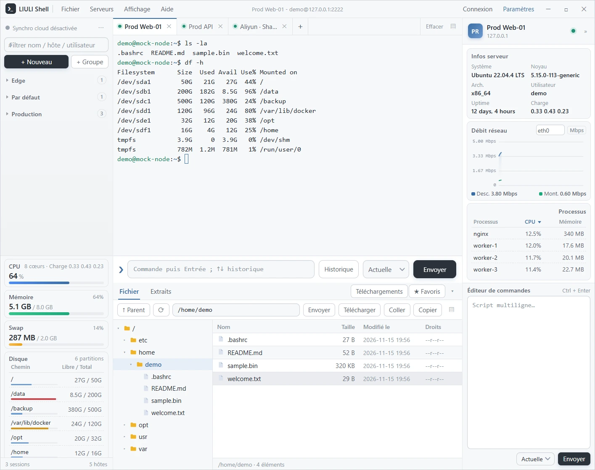

▤
Gestion des serveurs
Organisez les serveurs en groupes, avec sélection multiple, déplacement par glisser-déposer et copie de configurations ; les connexions supprimées vont dans une corbeille de 30 jours, restaurables à tout moment.
LIULI Shell est un client SSH multiplateforme.
Il réunit la gestion des connexions, un terminal interactif, le transfert de fichiers SFTP, la surveillance de l'état d'exécution et la synchronisation de configuration dans une seule application de bureau, pour les développeurs et administrateurs système qui gèrent plusieurs serveurs.

Windows 10 / 11 propose une version installable et une version portable ; Linux et macOS se compilent depuis les sources. Les deux versions Windows ont les mêmes fonctionnalités.
La version installable inclut un assistant et crée des raccourcis ; la version portable fonctionne après extraction, idéale pour une clé USB ou un environnement temporaire.
Ouvrir 夸克网盘 ↗Adapté à l'accès depuis l'étranger ; les fichiers des versions suivent les commits du dépôt.
Voir les Releases GitHub ↗Adapté à l'accès depuis la Chine continentale ; fournit des fichiers portables, synchronisés avec le dépôt.
Voir les Releases Gitee ↗Installer les dépendances et générer le paquet sur le système cible : deb, AppImage, tar.gz, ainsi que dmg et zip pour macOS.
%APPDATA%\LIULI Shellpar défaut ; une mise à jour ou une réinstallation ne la supprime pas. Pour changer d'ordinateur, utilisez la synchronisation cloud ou exportez le fichier de configuration depuis les paramètres.
Linux et macOS doivent être compilés sur la machine cible. Exécutez les commandes une par une, sans coller tout le bloc. Le script identifie la distribution, installe les dépendances et demande le type de paquet.
Choisissez d'abord une source (Gitee ou GitHub), puis entrez dans le dossier et lancez le script de compilation.
Gitee clone par défaut dans liuli-shell, GitHub dans Liulishell ; les commandes ci-dessous clonent dans liuli-shell, pour rester identiques par la suite.
Git est requis.Étape 0 : installer Git ; étape 1 : ne garder qu'une seule source ; étape 2 : lancer le script de compilation. Lancez la compilation une fois le clonage terminé.
# 0) Git requis ; ignoré s'il est déjà installé (dnf / pacman sur d'autres distributions) command -v git >/dev/null || sudo apt-get update && sudo apt-get install -y git # 1) Supprimer les anciens dossiers, puis cloner la source (Gitee ou GitHub) # Gitee (recommandé en Chine ; dossier par défaut : liuli-shell) rm -rf liuli-shell Liulishell && git clone https://gitee.com/liuliwanjiaweb/liuli-shell.git liuli-shell # GitHub (recommandé à l'étranger ; dossier par défaut : Liulishell, ici liuli-shell) rm -rf liuli-shell Liulishell && git clone https://github.com/LIULIWANJIA/Liulishell.git liuli-shell # 2) Entrer dans le projet et compiler : détecter la distribution → dépendances système → choisir deb / AppImage → paquet → proposer l'installation cd liuli-shell && bash scripts/build-linux.sh
Les fichiers sont générés dans dist/. Le script propose de choisir 1 = deb / 2 = AppImage / 3 = les deux ; pour ne générer que .tar.gz utilisez bash scripts/build-linux.sh tar. Le script gère automatiquement les *t64 de paquets sur Ubuntu 24.04+. Les environnements non interactifs comme la CI n'installent pas automatiquement : installez le paquet manuellement. En cas d'anomalie, lancez bash scripts/build-linux.sh check pour diagnostiquer ; le script bascule automatiquement de miroir si le téléchargement d'Electron est lent.
# 3) Si les dépendances manquent ou que la compilation échoue, essayer dans l'ordre
bash scripts/build-linux.sh repair
bash scripts/build-linux.sh deps
bash scripts/build-linux.sh
Les outils déjà installés sont ignorés.L'installation de Homebrew demande le mot de passe de l'utilisateur. Après le clonage, installez les dépendances et générez le paquet ; choisissez Intel ou Apple Silicon selon le besoin.
# Outils de base (ignorés si installés ; xcode-select ouvre une fenêtre, attendez la fin) xcode-select --install 2>/dev/null || true command -v brew >/dev/null || /bin/bash -c "$(curl -fsSL https://raw.githubusercontent.com/Homebrew/install/HEAD/install.sh)" # Ajouter Homebrew au PATH après installation (Intel : /usr/local/bin/brew) if [ -x /opt/homebrew/bin/brew ]; then eval "$(/opt/homebrew/bin/brew shellenv)"; elif [ -x /usr/local/bin/brew ]; then eval "$(/usr/local/bin/brew shellenv)"; fi # Node ≥ 18 requis ; installer 20 s'il manque ou est trop ancien, puis vérifier node -v 2>/dev/null | grep -qE '^v(1[89]|[2-9][0-9])' || brew install node@20 brew link --overwrite --force node@20 >/dev/null 2>&1 || true node -v && npm -v # Supprimer les anciens dossiers, puis cloner la source (Gitee ou GitHub) rm -rf liuli-shell Liulishell # Gitee (recommandé en Chine ; dossier par défaut : liuli-shell) git clone https://gitee.com/liuliwanjiaweb/liuli-shell.git liuli-shell # GitHub (recommandé à l'étranger ; dossier par défaut : Liulishell, ici liuli-shell) git clone https://github.com/LIULIWANJIA/Liulishell.git liuli-shell
cd liuli-shell npm ci || npm install # repli automatique sur npm install en cas d'échec npm run vendor # Si Electron se télécharge lentement depuis la Chine, décommentez les deux lignes suivantes (facultatif) # export ELECTRON_MIRROR=https://registry.npmmirror.com/-/binary/electron/ # export ELECTRON_BUILDER_BINARIES_MIRROR=https://registry.npmmirror.com/-/binary/electron-builder-binaries/ npm run dist:mac # x64 + arm64 ensemble npx electron-builder --mac dmg zip --arm64 # Apple Silicon uniquement
Les fichiers sont générés dans dist/(.dmg / .zip).npm run vendor copie les ressources xterm dans src/renderer/vendoravant la génération du paquet ; les fichiers Intel et Apple Silicon ne sont pas interchangeables. Si Gatekeeper bloque une application non signée, faites un clic droit sur « Ouvrir ».
Depuis la Chine, préférez Gitee ; si Electron se télécharge lentement, définissez une variable de miroir.
L'import accepte les fichiers JSON exportés par FinalShell ou le dossier de configuration complet. L'import lit les informations de connexion, reconstruit la hiérarchie des groupes et affiche un récapitulatif avant l'écriture.
Déposez les fichiers ici ; vous pouvez sélectionner plusieurs JSON ou tout le dossier de configuration.
Les dossiers créent des groupes selon la hiérarchie (trois niveaux au maximum) ; les JSON situés plus profond sont rattachés au groupe de premier niveau correspondant, quel que soit le groupe cible.
Questions d'usage, suggestions et actualités des versions sont partagées dans les groupes. Rejoignez la plateforme que vous utilisez.
Les utilisateurs en Chine peuvent signaler des problèmes et échanger sur la configuration et l'usage dans le groupe QQ.
Les utilisateurs hors de Chine retrouvent les mêmes annonces et discussions sur Telegram.
De la connexion aux serveurs au transfert de fichiers, à la consultation de l'état et à la migration de configuration, l'essentiel se fait dans le client. Voici ce que fait chaque module.
Organisez les serveurs en groupes, avec sélection multiple, déplacement par glisser-déposer et copie de configurations ; les connexions supprimées vont dans une corbeille de 30 jours, restaurables à tout moment.
Chaque onglet est une session SSH indépendante, avec historique des commandes, saisie rapide, reconnexion et réorganisation des onglets par glisser-déposer ; les connexions via proxy affichent un indicateur d'état.
L'arborescence SFTP et la liste des fichiers sont liées et suivent les changements de dossier du terminal ; envoi, téléchargement, modification des droits et éditeur de texte intégré.
Collecte continue du CPU, de la mémoire, du Swap, des disques, des cartes réseau et des processus ; les échelles des graphiques s'adaptent automatiquement, ce qui permet de repérer directement une charge anormale.
Les téléchargements sont gérés dans une fenêtre dédiée : pause, annulation ou vidage des tâches, avec progression, débit et état en temps réel.
Prend en charge le service cloud officiel et un WebDAV personnalisé : synchronisation chiffrée des serveurs, groupes et favoris, fusion bidirectionnelle entre appareils ; synchronisation ou sauvegarde manuelle également possible.
Lit les sauvegardes JSON de FinalShell ou tout le dossier de configuration et reconstruit les groupes selon la hiérarchie d'origine ; aperçu avant import, doublons ignorés automatiquement.
8 thèmes clairs et sombres intégrés ; polices, tailles, zoom de l'interface, comportement de la souris et raccourcis sont réglables et enregistrés automatiquement.
Définissez un proxy HTTP / SOCKS5 par connexion ou globalement, avec proxy par défaut et repli en direct, pour les intranets et les réseaux restreints.
Regroupez les commandes fréquentes par panneaux pour éviter de retaper de longues commandes ; les modifications se font ensuite dans l'éditeur de commandes.
Les panneaux Courantes, Docker, Réseau et autres sont gérés séparément ; les boutons n'affichent que leur nom pour garder une interface épurée ; panneaux et commandes se réordonnent par glisser-déposer.
L'état d'exécution est collecté dès la connexion ; identifiez d'abord une charge anormale dans le client, puis décidez d'ouvrir un terminal.
Ressources à gauche, débit réseau et occupation des processus à droite ; l'intervalle de rafraîchissement et l'unité de débit se règlent dans les paramètres.
Identifiants, sauvegardes de configuration et restauration des suppressions se font dans le client, avec moins de dépendance à des services externes ou à des manipulations manuelles.
Les identifiants ne sont stockés que sous forme chiffrée et jamais affichés en clair ; la configuration est sauvegardée avant écriture et les serveurs ou groupes supprimés vont dans la corbeille.
La largeur des trois colonnes se règle par glisser-déposer et chacune peut être masquée ; en haut, les onglets de session et les contrôles de fenêtre, en bas, la barre d'état indique le nombre de connexions actives.


L'interface du client et ce site sont disponibles en chinois simplifié, chinois traditionnel, anglais, russe, français, allemand, japonais et coréen. Le changement de langue met à jour l'adresse de la page et les balises hreflang ; chaque langue reprend les mêmes fonctionnalités et les mêmes captures d'écran.
Les paramètres sont regroupés par usage et enregistrés automatiquement. Voici les six groupes les plus utilisés.
6 thèmes clairs et 2 sombres ; l'interface, le fond du terminal et les couleurs ANSI changent ensemble.
Dépliez la référence complète pour contrôler manuellement la compilation, préparer les dépendances d'une distribution ou diagnostiquer une erreur de paquet.
Le nom des bibliothèques système varie selon la distribution ; depuis Ubuntu 24.04, c'est *t64. Usages des trois paquets : AppImage sans installation, deb via le gestionnaire de paquets, tar.gz utilisable après extraction sans dépendre de FUSE.
scripts/build-linux.sh du dépôt détecte la distribution et gère le repli vers les noms t64.bash scripts/build-linux.sh une seule commande fait « détecter la distribution → installer les dépendances → choisir le type de paquet → générer → proposer l'installation », compatible apt / dnf / pacman. Pour les dépendances seules, utilisez ... deps, pour le diagnostic seul ... check, en cas d'environnement cassé ... repair. À l'installation : deb passe par apt install et crée les icônes de bureau ; AppImage est copié dans ~/Applications/LIULI-Shell avec une entrée de menu et une icône de bureau.chmod +x dist/LIULI-Shell-*-x86_64.AppImage ./dist/LIULI-Shell-*-x86_64.AppImage # Installer le deb sur Debian / Ubuntu sudo apt install ./dist/LIULI-Shell-*_amd64.deb # Extraire et exécuter (sans FUSE, sans écrire dans les dossiers système) mkdir -p ~/Applications tar -xzf dist/LIULI-Shell-*-x86_64.tar.gz -C ~/Applications ~/Applications/LIULI-Shell-*/liulishell
AppImage utilise le runtime type-2 et nécessite FUSE 2. Ubuntu 22.04 et antérieurs l'incluent ; 24.04 / 26.04 demandent une installation manuelle. Sans FUSE, une exécution après extraction reste possible.
# Ubuntu 24.04 / 26.04 sudo apt install -y libfuse2t64 # Ubuntu 20.04 / 22.04, Debian 12 sudo apt install -y libfuse2 # Exécuter sans FUSE (démarrage un peu plus lent, mêmes fonctionnalités) ./LIULI-Shell-*-x86_64.AppImage --appimage-extract-and-run # Ou utiliser le paquet tar.gz, sans aucune dépendance à FUSE
# 1) Placer dans un dossier fixe mkdir -p ~/Applications cp dist/LIULI-Shell-*-x86_64.AppImage ~/Applications/LIULI-Shell.AppImage chmod +x ~/Applications/LIULI-Shell.AppImage # 2) Extraire les icônes (--appimage-extract crée squashfs-root dans le dossier courant) cd /tmp && ~/Applications/LIULI-Shell.AppImage --appimage-extract '*.png' >/dev/null 2>&1 mkdir -p ~/.local/share/icons/hicolor/512x512/apps cp /tmp/squashfs-root/*.png ~/.local/share/icons/hicolor/512x512/apps/liulishell.png 2>/dev/null \ || cp /tmp/squashfs-root/liulishell.png ~/.local/share/icons/hicolor/512x512/apps/ 2>/dev/null # 3) Écrire l'entrée de menu ($HOME sera remplacé par le dossier de l'utilisateur) mkdir -p ~/.local/share/applications cat > ~/.local/share/applications/LiuliShell.desktop <<EOF [Desktop Entry] Type=Application Name=LIULI Shell Comment=Client SSH multiplateforme et gestionnaire de serveurs Exec=$HOME/Applications/LIULI-Shell.AppImage %U Icon=liulishell Terminal=false Categories=Development;System;Network; StartupWMClass=LiuliShell EOF chmod +x ~/.local/share/applications/LiuliShell.desktop update-desktop-database ~/.local/share/applications 2>/dev/null || true # 4) Pour une icône de bureau, en copier une et la marquer de confiance cp ~/.local/share/applications/LiuliShell.desktop ~/Desktop/ gio set ~/Desktop/LiuliShell.desktop metadata::trusted true 2>/dev/null || true # Sur un système localisé, le dossier du bureau peut être ~/Bureau : adaptez si besoin
Les utilisateurs du .deb n'ont pas besoin de ces étapes : l'installation écrit automatiquement /usr/share/applications, l'application apparaît directement dans le menu.
Prérequis :macOS 12+ (Intel ou Apple Silicon), Xcode Command Line Tools, Homebrew, Git, Node.js 20/22 LTS. Le dmg ne peut pasêtre compilé sous Windows / Linux.
1. Outils de base(xcode-select ouvre une fenêtre, attendez la fin de l'installation)
xcode-select --install /bin/bash -c "$(curl -fsSL \ https://raw.githubusercontent.com/Homebrew/install/HEAD/install.sh)" # Ajouter brew au PATH sur Apple Silicon (Intel : /usr/local/bin/brew ; relançable sans doublon) grep -qsF 'brew shellenv' ~/.zshrc || echo 'eval "$(/opt/homebrew/bin/brew shellenv)"' >> ~/.zshrc source ~/.zshrc
2. Node 20 et Git
brew install node@20 git brew link --overwrite --force node@20 node -v && npm -v # attendu : v20.x
3. Sources et dépendances(supprimez d'abord les anciens dossiers pour éviter les fichiers résiduels ; choisissez Gitee ou GitHub. Gitee clone par défaut dans liuli-shell, GitHub dans Liulishell, ici cloné explicitement dans liuli-shell)
rm -rf liuli-shell Liulishell # Gitee (recommandé en Chine) git clone https://gitee.com/liuliwanjiaweb/liuli-shell.git liuli-shell # GitHub (recommandé à l'étranger ; décommentez la ligne suivante et commentez celle de Gitee) # git clone https://github.com/LIULIWANJIA/Liulishell.git liuli-shell cd liuli-shell npm ci || npm install # repli sur npm install si le fichier de verrouillage ne correspond pas npm run vendor # copie les ressources xterm dans src/renderer/vendor avant la génération du paquet
4. Génération du paquet(l'architecture courante est la plus rapide ; pour les deux, passez dist:mac)
npm run dist:mac # x64 + arm64 ensemble npx electron-builder --mac dmg zip --arm64 # Apple Silicon uniquement npx electron-builder --mac dmg zip --x64 # Intel uniquement
5. Fichiers et cache :Les fichiers sont générés dans ~/liuli-shell/dist/(*.dmg,*.zip) ; les caches de téléchargement d'Electron et des outils de paquet sont dans ~/Library/Caches/electron/et~/Library/Caches/electron-builder/ ; les supprimer force un nouveau téléchargement.
6. Installation non signée :Si Gatekeeper bloque l'application après l'avoir déposée dans « Applications », faites un clic droit sur « Ouvrir », ou exécutez :
xattr -dr com.apple.quarantine "/Applications/LIULI Shell.app" spctl --assess --type execute -vv "/Applications/LIULI Shell.app" # voir la raison du blocage
La distribution publique nécessite un certificat Apple Developer ID et une notarisation : configurez CSC_LINK(chemin ou base64 du .p12),CSC_KEY_PASSWORD ; la notarisation demande aussi APPLE_ID,APPLE_APP_SPECIFIC_PASSWORD,APPLE_TEAM_ID ; electron-builder effectue la signature et la notarisation.
npx electron-builder --mac dmg --universal(environ le double de la taille d'une architecture, et une compilation nettement plus lente).| Erreur / symptôme | Cause et traitement |
|---|---|
| Impossible de localiser le paquet libasound2 | Depuis Ubuntu 24.04 / Debian 13, les bibliothèques système sont renommées *t64(par ex. libasound2t64,libgtk-3-0t64). Installez d'abord l'ancien nom, avec repli automatique :bash scripts/build-linux.sh deps intègre déjà cette logique. |
| dlopen(): error loading libfuse.so.2 | AppImage nécessite FUSE 2 à l'exécution : sur 24.04+ installez libfuse2t64, sur 22.04 et antérieurs libfuse2 ; sans FUSE, utilisez --appimage-extract-and-run, ou passez à .tar.gz. |
| Téléchargement d'Electron expiré / bloqué sur downloading | Définissez un miroir puis réessayez :export ELECTRON_MIRROR=https://registry.npmmirror.com/-/binary/electron/,export ELECTRON_BUILDER_BINARIES_MIRROR=https://registry.npmmirror.com/-/binary/electron-builder-binaries/. |
| Échec de npm ci / fichier de verrouillage incompatible | Supprimez node_modules puis utilisez npm install ; un Node trop ancien (< 18) ne s'installe pas, passez à Node 20. |
| rpmbuild not found | Nécessaire seulement pour le rpm : sur Fedora installez rpm-build, sur Debian/Ubuntu rpm et rpm2cpio paquets, ou ignorez la cible rpm. |
| Permission denied (exécution d'AppImage) | Droit d'exécution manquant :chmod +x dist/LIULI-Shell-*-x86_64.AppImage. |
| errSecInternalComponent / échec de signature (macOS) | keychain est verrouillé :security unlock-keychain -p <mot de passe> ~/Library/Keychains/login.keychain-db puis relancez ; sur CI, ajoutez aussi security set-key-partition-list. |
dist/à la racine du projet. Sous Linux, LIULI-Shell-*-x86_64 / *-arm64 de .AppImage / .deb / .tar.gz(le script détecte l'architecture) ; sous macOS, .dmg / .zip.npm run vendor copie les ressources frontend comme xterm.js dans src/renderer/vendor/ ; sans cette étape, le terminal du paquet reste vide.ubuntu-22.04,macos-14 runner) pour générer les paquets.dist/ les paquets d'installation et portables de la plateforme concernée comme fichiers de Release (sous Windows, *.blockmap sert uniquement aux mises à jour différentielles, inutile de le téléverser) ; ne commitez pas dans le dépôt de sources node_modules/ et dist/.